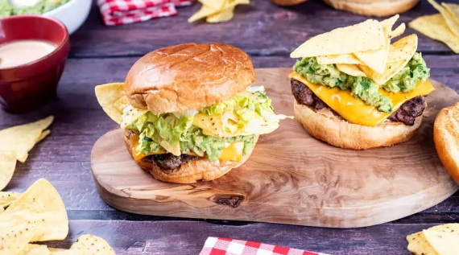

Nacho Burgers
Nacho Beef Burgers

Description
Serves: 4
Restraurant quality burgers with melted cheese, burger sauace, quacamole
and tortilla chips.
Ingredients
- Beef mince
- Salt and pepper
- American cheese slices
- Jalapeno burger sauce
- Guacamole
- Nachos
- Shredded lettuce
- Burger buns
Steps
Preheat the grill or grilling pan
- Preheat the grill or stovetop grilling pan over a medium heat
Season and mix beef mince
- Place beef mince in a large bowl
- Season with salt and pepper to taste
- Gently mix together
Divide and shape the patties
- Divide the seasoned beef into four patties
- Shape the patties into loose balls
Cook the patties
- Place the beef balls into the pre-heated pan
-
Using a square of baking paper, cover each ball and press into a
pattie using a spatula
-
Press your thumb into the middle of each pattie then remove the paper
-
Cook the patties on the grill for 3-4 minutes on each
side or until done to desired level
Toast the burger buns
-
While the patties are cooking, splut the burger buns and toast them on
the grill until golden brown
Melt the cheese
-
In the last minute of cooking place a slice of cheese ontop of top of
each pattie
-
Turn off the head and cover the pan.This allows the cheese to melt and
the burgers to rest
Assemble the nacho burgers
-
Spread a tablespoon of jalapeno burger sauce onto the top of the
bottom bun
- Place a cheese covered pattie on top of the sauce
-
Spoon guacamole and sprinkle crushed nachos on top of the patties
- Add a handful of shredded lettuce
- Place the top half of the burger bun on top